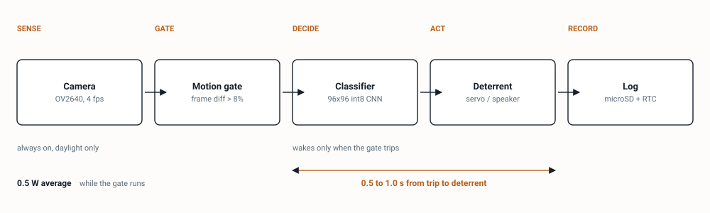
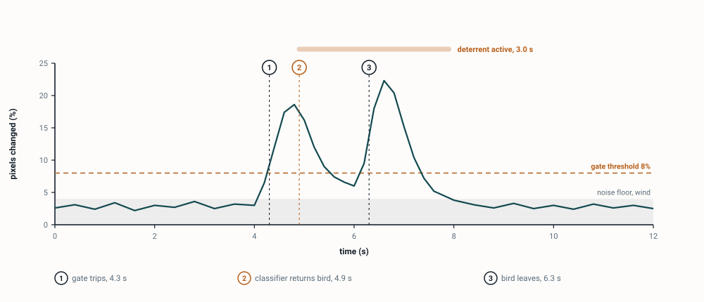
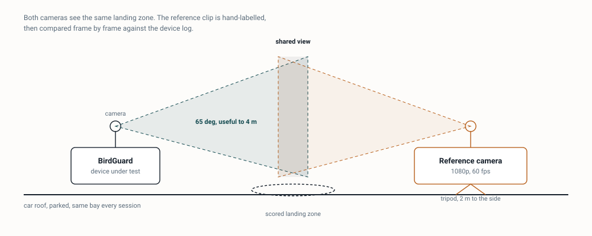
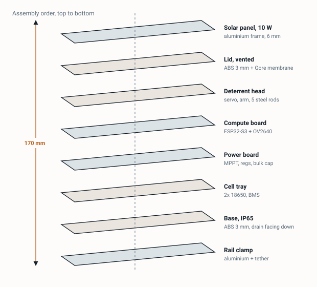
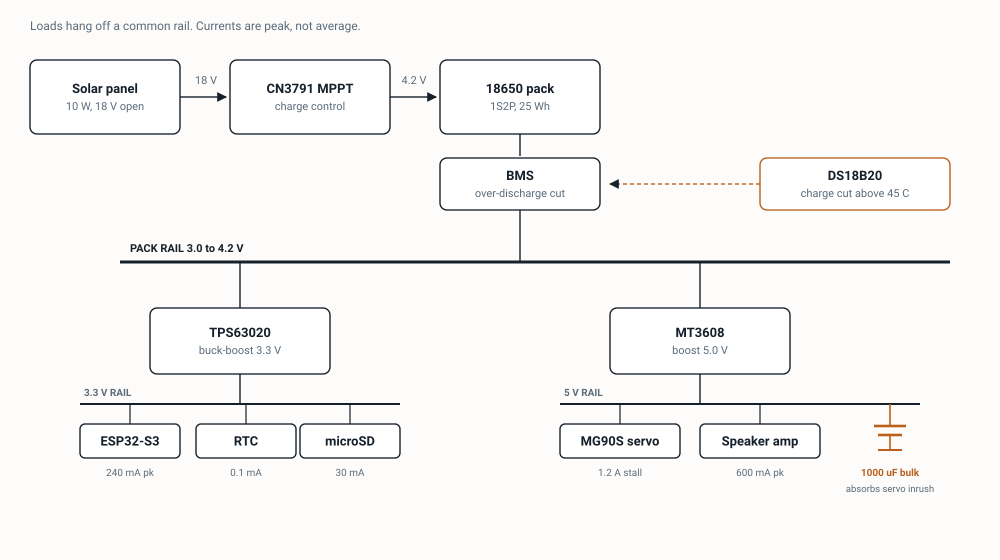

Solar hardware · Demonstrator
BirdGuard
A solar box that watches a parked car roof and nudges landing birds somewhere else, without harming them.
No mains, no network. It runs all summer on a 10 W panel and logs every event it causes.

A solar box that watches a parked car roof and nudges landing birds somewhere else, without harming them.
No mains, no network. It runs all summer on a 10 W panel and logs every event it causes.

The gate is the step that is not obvious. Running the network on every frame would flatten the battery in a day, so a cheap frame difference decides when the costly step may run.

A second camera on a tripod films the same landing zone at 1080p and 60 fps, clocks synchronised each session. Every landing in the reference clip is hand-labelled, then lined up against the device log frame by frame. The target is recall of 85% or better on birds that land inside the zone, and no more than one false trigger per hour of daylight. Forty hours holding at least 60 landings measures both.
If recall lands under 85%, the classifier threshold drops and we accept more false fires. The budget has room for them; a missed bird does not come back.
A bird leaves a car roof eventually whether or not anything happens, so measuring only the times the device fires would prove nothing. On every confirmed landing the firmware flips a logged coin and either fires or stays silent. The outcome recorded is whether the bird has gone within 10 seconds.
Separating 35% from 60% at 80% power needs 63 events in each arm, so 126 landings in total. At five landings a day that is about five weeks in a well-chosen spot. If the site proves quieter, we switch the outcome to time-to-departure as a continuous number, which reaches usable power near 30 events per arm, and we say plainly that the pass-or-fail comparison is underpowered.


The brief asks the system to spot birds approaching. Work the pixels out first. A pigeon is about 30 cm long, and the camera spreads 65 degrees across 160 pixels, or 0.41 degrees per pixel. The bird covers 14 pixels at 3 m, 8 pixels at 5 m and 4 pixels at 10 m. Nothing at 10 m is classifiable. We would drop approach tracking and detect the perch instead, which the same hardware does well.
A single-board computer holding a model in memory draws about 6 W, which is 144 Wh over a day. A 10 W panel lying flat on a car roof returns roughly 20 Wh on a good day and far less under cloud. The original shape is short by a factor of seven. Running the camera in daylight only, gated on frame difference, brings the average to 0.5 W and about 6 Wh a day.
The power chain is missing three parts. The list jumps from panel to battery to board. A single lithium cell sits between 3.0 and 4.2 V, so a plain regulator cannot hold 3.3 V across that range and a buck-boost is needed. Charging from an 18 V panel needs an MPPT controller, not a USB charger. And the servo pulls 1.2 A on stall, which browns the processor out unless a 1000 uF capacitor sits on the 5 V rail.


| Part | What it does | Price |
|---|---|---|
| ESP32-S3 camera board | Camera and on-board inference | $16 |
| Solar panel, 10 W framed | Charges the pack | $22 |
| CN3791 MPPT module | Matches panel to cell | $6 |
| 2x 18650 cells and holder | 25 Wh store, three days without sun | $18 |
| 1S protection board | Over-discharge and short cut | $3 |
| TPS63020 buck-boost | Holds 3.3 V across the cell range | $9 |
| MT3608 boost | 5 V for servo and audio | $3 |
| MG90S servo | Sweeps the deterrent arm | $5 |
| Audio module and 3 W speaker | Plays the alarm calls | $9 |
| DS3231 clock | Timestamps across power cycles | $4 |
| microSD module and card | Event log and sample frames | $8 |
| DS18B20 sensor | Blocks charging above 45 C | $3 |
| 1000 uF capacitor, passives | Absorbs servo inrush | $3 |
| Vented IP65 enclosure | Keeps rain and dew out | $12 |
| Rail clamp and steel tether | Holds it on the car | $10 |
| Wire, connectors, standoffs | Assembly | $8 |
| One unit | $139 |
Prices are approximate and exclude shipping. Build two. A second unit costs less than the week lost when the first dies before a deadline. The spare can skip the panel, enclosure and clamp and sit on a bench supply, which puts the pair near $234.

Telling a bird from a moving shadow is the entire project. A leaf, a passing person, cloud shadow on the paint and the reflection of a moving car all trip a frame difference the way a pigeon does. The soldering takes a weekend. Getting the false trigger rate under one an hour takes the term.
The safety valve is a fixed-interval sweep with no vision at all. It still supports the deterrent comparison, because the randomised control arm does not care what caused the fire. That decision has to be made by the end of week six. Later than that and there is no time to collect 126 events.
Then the dull one. A dark enclosure in July sun reaches 60 to 70 C inside, and lithium cells must not be charged above 45 C. Without a vented lid, a light-coloured shell and a sensor that halts charging, the pack degrades in a month and the project ends for reasons that have nothing to do with birds.

Working notes. Not needed to understand the project.

| Item | Draw | Per day |
|---|---|---|
| Gate, camera plus CPU, 12 h daylight | 0.5 W avg | 6.0 Wh |
| Classifier, 60 wakes x 4 s | 1.0 W | 0.07 Wh |
| Servo, 20 fires x 3 s | 3.0 W | 0.05 Wh |
| Audio, 20 fires x 3 s | 1.0 W | 0.02 Wh |
| Clock, card, night sleep | 2 mW | 0.05 Wh |
| Total | 6.2 Wh |
Pack 25 Wh usable to 80% depth, so three days with no sun. Panel returns about 20 Wh on a clear day flat-mounted and near 4 Wh under heavy overcast. Break-even is roughly one clear day in three.
Gate: 160x120 greyscale, 4 fps, 3x3 box blur, absolute difference against a running background with alpha 0.02. Trips when changed pixels exceed 8% of frame for two consecutive frames. Two-frame rule kills single-frame sensor noise.
Classifier: 96x96 RGB, int8, MobileNet-style, roughly 200 kB of flash. Two classes plus background. Reported latency 400 to 600 ms on the S3 at 240 MHz. Threshold 0.7 to start, tuned against the reference set.
Zone mask: a hand-drawn polygon over the roof panel. Anything outside is ignored, which removes most sky and most passing traffic.
States: SLEEP, GATE, CLASSIFY, FIRE, OBSERVE, WRITE. OBSERVE holds for 10 s after a decision and keeps the gate running so departure time is captured whether or not the deterrent fired.
One CSV row per event: timestamp, gate peak percent, classifier score, arm assigned (motion, sound, vibration, silent), fire flag, seconds to departure, departure confirmed flag, battery volts, enclosure temperature. One 96x96 JPEG saved per event, capped at 200 a day.
Arm assignment uses a seeded pseudo-random draw so the sequence can be reconstructed from the log if the card is damaged.
Every part alone on the bench before any two are wired together. Panel open-circuit and short-circuit current under a lamp. MPPT into a resistor. Cell charge and discharge curve. Buck-boost held at 3.3 V while the input is swept 3.0 to 4.2 V. Boost under a 1.2 A pulse load with a scope on the 3.3 V rail, which is the test that proves the bulk capacitor is doing its job. Servo sweep from a bench supply. Camera to a laptop. Classifier on stored frames before it ever sees a live one.
Clock sync between device and reference camera, start and end of every session. Zone mask photographed each time the device is moved. Forty hours of daylight recording, at least 60 landings. Recall and false trigger rate computed per session, not pooled, so a single bad session is visible. Randomisation audited by counting arm assignments. Battery voltage and enclosure temperature plotted against time of day for the whole run.
Vibration is the weakest of the three arms. A coin motor cannot meaningfully shake a damped steel panel a metre across, so expect it to read as no different from the silent control. Keep it, because that null result is worth reporting, but do not expect it to win.
Ultrasonic deterrents are worth nothing here. Most birds hear poorly above 8 kHz.
Sound in a residential lot draws complaints. Cap output near 65 dB at 1 m and keep the daylight-only rule.
It cannot see a bird beyond about 5 m, so it cannot warn of an approach across a car park.
It cannot tell species apart. Pigeon, gull and crow are one class.
It cannot work at night or in heavy rain. The gate is off in both.
It cannot cover a whole car. One unit watches one roof panel, roughly 2 square metres.
It cannot travel. It is a parked-car device and must come off before driving.
It cannot prove birds were deterred rather than merely disturbed. It measures departure, not intent, and habituation over weeks is a real risk the log is designed to expose.